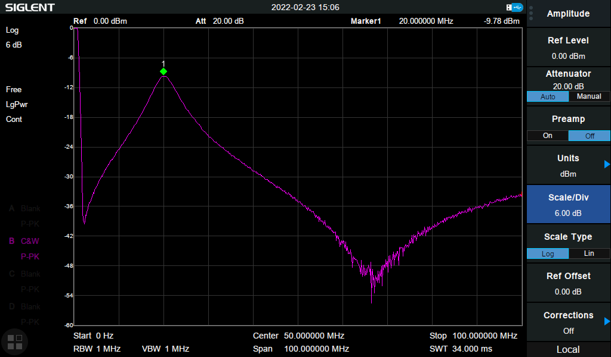
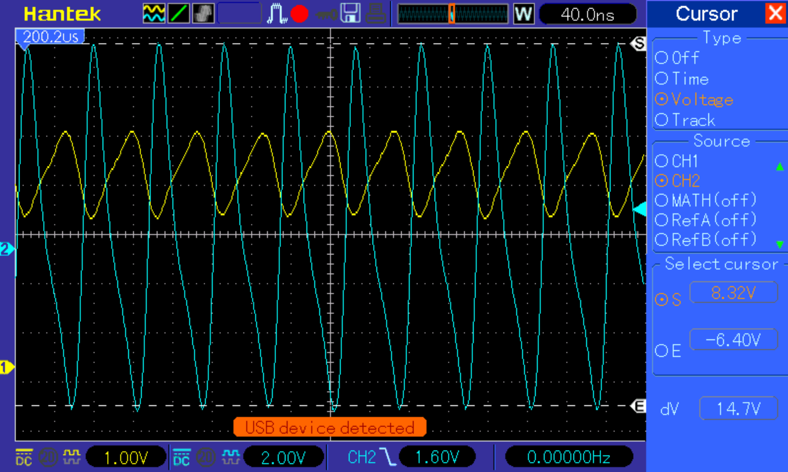
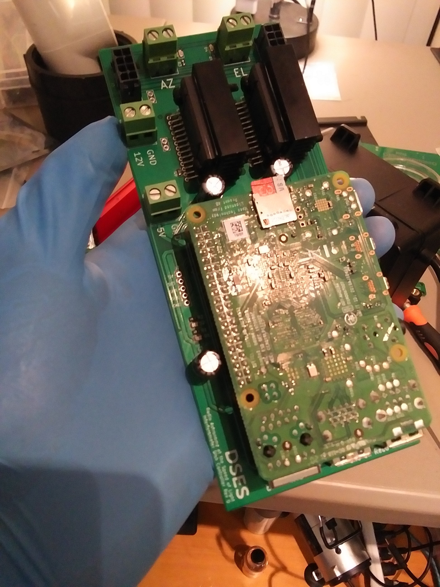

This is a living archive of projects that I have done, and it is intended to serve mostly
as a repository for all of the images that I have saved in various places that I will
undoubtedly lose at some point. Every image on this page is my own, and unless otherwise
noted all PCBs are my own designs.
A ~$20 instrument that will be capable of diagnosing malaria as shown in
Micromagnetic resonance relaxometry for rapid label-free malaria diagnosis.
My version of the instrument uses a movable magnet assembly so that the larmor frequency of the sample can be tuned to 20MHz. This allows
the clock signal to be generated by a cheap crystal.
The first iteration of the probe PCB was milled on a $200 CNC machine.


I'm currently delivering about 1W using an IRF510 based amplifier.
I built control electronics for a four-dish interferometer being constructed out at the
DSES site in Haswell, Colorado. Part of this was creating two custom 14 bit absolute encoders to hit cost targets.

Remote Monitoring Hardware for Well Pumps - Github Page
I built this for the San Francisco professional chapter of Engineers Without Borders (check them out:
ewb-sft.org).
Solid State Angle of Attack Sensor
This sensor uses an ultrasonic emitter and an array of microphones to calculate windspeed and airflow direction without any moving
parts. By comparing the phase of the recorded signal at each of the microphones, it is possible to calculate the delay or speedup
caused by the moving airmass.
I tested the sensor by fitting it to a car window with cardboard and driving around at different speeds:
The plot shows that the phase change for each mic is correctly correlated with the position of the mic relative to the airflow
direction and the ultrasound emitter. Mic was furthest forward (see first image above), mic 5 was furthest back. Also, the separation
of the phases increases at higher speeds, allowing the sensor to measure airspeed.
Because this is just a prototype, I used a Saleae logic analyzer to capture raw data from each of the mics, and extracted the appropriate
DFT terms using Goertzel's algorithm (see notebook here).
Ground Penetrating SAR for Finding Lunar Lava Tubes
This is my writeup of the work I've done developing a ground penetrating synthetic aperture
radar for the Husky Satellite Lab at UW.
Background
I joined the Husky Satellite Lab (HSL) in 2019, just in time to see the years of hard
work the group had put into Huskysat-1 culminate in a successful deployment from the
ISS. After operating the satellite for several months, we transferred control to Amsat
and all of the older members of the club who had stuck around to see the project through
moved on. After my first year, virtually all of the older members had left, leaving only
a handful of us to choose a new project for the group. Professor Robert Winglee (who sadly
passed away that winter) was our PI at the time, and he strongly encouraged us to develop
technologies that targeted a lunar mission.
I proposed the Ground Penetrating Radar to the group after reading a few articles about lunar
lava tubes. The first is
The structural stability of lunar lava tubes by David M. Blair et al., which uses FEA to
suggest that lava tubes on the moon could be kilometers wide and hundreds of meters tall - large
enough to fit a small city. A second article (
Evidence of large empty lava tubes on the Moon using GRAIL gravity by Loic Chappaz et al.)
found supporting evidence for these large subsurface voids in GRAIL gravimetric data.
Finally,
A multi-frequency radar sounder for lava tubes detection on the Moon: Design, performance
assessment and simulations by Leonardo Carrer, Christopher Gerekos, and Lorenzo Bruzzone"
presented simulations of a radar sounder instrument that would be able to detect most of the possible
lava tube geometries described by Blair's paper. After speaking with both David Blair and Cristopher
Gerekos (who designed the simulator used in the third paper), I thought it would be reasonable to
try to build the instrument that they had described.
Originally, this project had no budget, and I paid for a lot of the equipment out of pocket. After I
was able to demonstrate a working radar, we were granted $2000 by the Washington NASA Space Grant
Consortium, which was presided over by Professor Winglee. These funds covered the hardware cost of
both the GPR itself, as well as the DDS-AWG that we built to test it.
Instrument Principles
Several physical properties of the moon constrain the radar parameters. Lower center frequencies yield
greater penetration depths, and larger bandwidths yield finer resolution. There is, however, a tradeoff
between a lower center frequency and higher bandwidth, because as the fractional bandwidth of the chirp
becomes very large, the whole system becomes harder to match/tune. Because it is not possible to deploy
a large, wideband antenna from a small satellite, other orbital synthetic aperture radars (SAR) like the
LRS, SHARAD, and ALSE use isotropic dipoles for their low frequency experiments; since we would have to do
this as well, we were very concerned about how well we could match the antenna.
We also had to choose an architecture for the radar, with low cost and rapid development taking priority
over long mission duration or even instrument performance - the goal was a technology demonstration and
possible lave tube detection, not a detailed characterization or mapping of any lunar lava tubes. We chose
to use a DDS-based architecture because a DDS gives us unmatched flexibility for our waveform, and because
it allowed us to keep our analog frontend as small as possible (we only obtained access to a VNA halfway
through the project). The GPR is based on the LRS - the DDS generates a windowed chirp that is transmitted,
a T/R switch is flipped, and the echo is amplified and mixed with a second, identical chirp with a known
time offset. This "de-chirp" method allows us to significantly reduce the required analog bandwidth and
sample rate for the receiver, since we can trade vertical coverage (the range of our resulting radargrams
in the nadir direction) for a lower beat frequency from the mixer. This way, we can use chirped signals with
center frequencies above 100MHz, and sample the beat frequency at 100Mhz or less without approaching the
Nyquist rate. It is worth noting that the pulse duration is also traded here - long pulses give lower beat
frequencies, but since the radar is half-duplex, the pulses must be short enough that consecutive pulses do
not overlap.
We choose to use the AD9910 from Analog Devices as the DDS core for the GPR. At $63, we couldn't beat it
for price given the level of integration, and it has a number of very useful features that make it perfect for
our application. First, it has an internal "ramp generator" which can be programmed to sweep amplitude, frequency
or phase while the DDS operates. This gives us a very easy way to generate the variable length chirps with
the desired start and stop frequencies. Additionally, the AD9910 has an internal RAM that can be read out
in order to modulate frequency, phase, or amplitude. By programming the RAM with a Hann window and targeting
amplitude, we can window the chirp while it is generated. Finally, because the Hann window is completely
arbitrary, we can tweak the amplitudes to predistort the chirp, in order to account for the transfer function
of the hardware on the DDS output.
Test Plan and the DDS-AWG
As we made progress toward specifying the radar parameters, specifically the chirp bandwidth (30MHz) and
center frequency (80MHz), we realized that evaluating the instrument on Earth would be extremely difficult.
The first challenge is that there are very few places in Washington or even on Earth that are as dry as the
moon, with targets that look like lave tubes. Terrestrial lava tubes are too small to be detectable with
our system, and there was always going to be the challenge of moving the instrument 50-100km away from the
target to simulate the altitude of a lunar orbit. These challenges, of course, are not insurmountable, and we
put together detailed plans for overcoming them: we could test with higher frequencies and bandwidths on Earth
to resolve smaller features, use high altitude balloons to check our instrument at altitude, and run as many
lab tests as possible to confirm that the radar was behaving as expected. The second problem is that the low
center frequency and high bandwidth of the radar means that the chirp it generates spans an enormous chunk of
the VHF spectrum. Professor Winglee was very against obtaining an experimental license from the FCC, and although
he allowed us to try, the presence of a few military frequency allocations in the band we were interested in
stalled the process almost immediately.
In liu of real-world testing at the system level, I proposed that, in addition to the real-world tests we had
already described, we could use the radar simulator that Chris Gerekos had built for his lava tube paper to
simulate reflections from the moon. This simulator starts with a chirped waveform, and computes the echo by
summing the reflected signals from millions of triangles imported from a user supplied DEM of the lunar surface.
We could generate a chirp with our instrument and record it with a DSO, and then feed this signal into the
simulator. We'd allow the simulator to calculate the reflected chirp, and then we would synthesize it, attenuate
it, and feed it back into the radar after the appropriate delay. Then, we could take the output from the radar
and perform SAR processing on a collection of these rangelines to recover the radargram, which we would
compare to the simulated radargrams in Gerekos' paper.
This idea garnered the support of Professor Winglee and the rest of the satellite lab, but it required us to
obtain or design/build a DDS capable of simulating the rangelines returned by Gerekos' simulator. I spoke to
an engineer at Siglent, and their highest performance AWG could only generate some of the waveforms we are
interested in. We would not be able to afford the kind of instrument that we needed, so I started working on
a design built around the DAC5687 from Texas Instruments. This chip can use an onboard NCO to upconvert input
data at a lower sample rate to a full 500MSps. The rest of the AWG consists only of a CPLD which allows a user
to program a high speed SRAM with waveform data, and a USB-Serial converter from Microchip. The design files
and HDL for this DDS are open source and available on Github.
Bringup
After Professor Winglee passed away, I laid out hardware for the radar and we purchased the boards and components.
This is what it looked like after 8 hours of assembly:
This PCB is designed for development only, so it would not fit in a cubesat form factor and it makes extensive
use of jumper cables.
Progress stalled after I graduated and turned the hardware over to my peers at the Husky Satellite Lab - as I
understand it, the lab was restructured and nobody was available to pick it up. In August 2021, I reached out
and asked if I could have the hardware sent to me so that I could keep working on it, and I mounted the radar,
the DDS, and an STM32 eval board to a sheet of prepreg I had laying around. I wrote a driver for the AD9910
(open source, on Github) that allows the instrument to generate
Hann windowed chirps that match the expected waveform:
Radar Simulator Testing
The first test of the system involves measuring the length of a spool of coaxial cable from Home Depot.
Because we cannot legally transit at the frequencies that the radar is designed to use, an end-to-end test is only possible
if the signal is confined to a cable. I connect the output which would normally feed the PA to one length
of coaxial cable, and I connect the other end of the cable to the antenna connector. The transmit/receive
switch is set to receive, and a switch on the PCB feeds the output of the DDS into a power divider. This
way, half the signal goes through the coaxial cable, and the other half goes directly into the mixer. The
radar generates a chirp from 65 to 95MHz that lasts for 1 millisecond. The raw output of the mixer is shown
below, along with the theoretical result:
The Hann windows are not perfectly congruent - this is something we are investigating. It is likely that
this is an error in the programmed Hann window, but it can be fixed with predistortion in an case. The
measured tie delay can be calculated by taking an FFT, and dividing by the frequency rate of change. The
distance is then just the time delay times the speed of light, taking the velocity factor of the coaxial
cable (0.83 for cheap RG6) into account:
I've zoomed in on the second image to make the length of the coax more obvious. The system's measured length
is within 5m (the range resolution) of the true 152m (500ft) length of the coaxial cable. In these images,
the real system seems to outperform the theoretical calculations, which was bizarre to me. After checking for errors, I realized that this was due to
the filtering that the real signal had. After digitally filtering the theoretical IF, it outperforms the
real system:
Polkadot Mesh Network
I did this project for the embedded systems capstone at UW. I had been toying with the idea
of building a LoRa mesh network for radio stations, and I took the opportunity to build
the hardware I was picturing and to learn a lot about mesh networking by implementing AODV
in embedded C. In our group, I was responsible for the hardware and the mesh networking firmware,
while my group members built a Raspberry Pi based server that allowed a user to interact with the
mesh in real time. All of the hardware and the software that I've created is free to share and use,
and it can be found on Github.
The last photo shows a polkadot board in a 3D printed case with a solar panel. I designed the case
to bolt to a metal post from the hardware store (the ones used to hold trees upright).
Airplane Datalogger
One of my friends was interested in building and flying remote control aircraft, so I made
a device that "hides" between the receiver and the servo motor connectors. The device saves
the PWM duty cycle of each of the six receiver channels to an SD card, so that the position
of each of the control surfaces could be logged over the course of a flight. Additionally, the
datalogger was equipped with a triaxial magnetometer and a six axis IMU.
As of this writing, I am still waiting for them to conduct a successful flight, but I have
faith that they will pull it off, and I'll post any data we get here.
Small Radiosonde
After meeting someone who was studying meteorology, I was fascinated by how dependent weather
prediction is on the tiny number of radiosondes launched by the NWS and other services around
the world twice each day. I wanted to try building a much smaller version, so I did:
\
The lower photo shows one of the radiosonde PCBs next to a Vaisala RS92 for comparison.
This radiosonde is tracked using multilateration, and can measure pressure, temperature, and
humidity with accuracy comparable to a Vaisala radiosonde. It uses a little transceiver IC to
communicate at 433 or 407MHz, and it uses a custom Brokaw bandgap reference temperature sensor
to give high accuracy temperature readings from -100 to 50 degrees centigrade, at a very low cost.
I tried to reach someone at the NWS to talk about it, but our meeting fell through and in the
meantime I convinced myself that this type of radiosonde wasn't the solution - the balloon still has
to carry itself, so a large balloon is still required even for a tiny radiosonde. Additionally, this
radiosonde is not that much cheaper than a Vaisala radiosonde. If I ever get the chance, I really want
to integrate all of the circuitry onto a single IC, which I think would allow the NWS to launch
thousands of them per day at only a few cents per launch.
500 Msps DDS-AWG for Radar Simulation
This project grew out of a need to test a design for an orbital ground penetrating
radar sounder for detecting lava tubes that I designed for the Husky Satellite Lab at
the University of Washington. We are not licensed to transmit on the frequencies used
by the radar sounder, and there are no terrestrial targets with predicted radar
signatures similar to those of lava tubes on the moon. I proposed that we build a
system to synthesize radar returns generated by Chris Gerekos' Coherent Multilayer
simulator, and this is what I built after that proposal was funded.
The DDS uses an Altera Max V CPLD to load an SRAM with data extracted from Gerekos'
simulator. When the system receives a trigger signal, the CPLD reads out the data in
the SRAM at 100Msps into a TI DAC5687 which does all the hard work of numerically
upconverting and synthesizing the signal. The result is a complex 500Msps output with
100MHz of bandwidth which can be used as a test input for our radar setup. All of the IP
that I created for this project is open source, and it can be found at
the UW Cubesat Github Repository.
An example output from the DDS, synthesizing first a square wave and then a sine wave
at baseband.
Radar Demo
This was part of my radar proposal to the NASA Washington Space Grant Consortium (which was funded!).
I used an AD9910 demo board with a custom driver to synthesize chirps that could be transmitted or fed into
a coax delay line. The received signal would be de-chirped, filtered and digitized by the sound card in my
laptop.
The image above shows the radar response to a building on campus at the predicted distance.
Alternative Dev Board
The digital design classes at the University of Washington use the DE1-SoC development kit
from Terasic for all of the lab assignments. Unfortunately, the cost of this board means that
we cannot keep the hardware after finishing the course, so I designed this very low cost
alternative instead. I use the MAX V CPLD, which is fully compatible with the toolchain that
we use in the courses, and all of my labs were able to synthesize and run on the custom hardware.
Sadly, the department administrators explained that by reusing the kits, they only spent $5 per
student per quarter, so my $14.70 alternative was too expensive. However, I still use the
prototype that I built for testing other CPLD projects!
VU Meter/Spectrum Analyzer
An old friend of mine is a musician, so I made them an STM32 based VU Meter that would change
colors depending on the frequencies of the received sound. After sketching out an implementation
that used a lot of VCVS stages, I decided to use a digital implementation instead. A simple
microphone amplifier circuit feeds the raw sound signal to the ADC of an STM32F4, which DMAs a few
milliseconds worth of samples into a buffer and then uses the ARM CMSIS DSP library to take an FFT.
The brightness of the RGB leds around the PCB is set in real time by the coefficients from the FFT.
The VU Meter is powered by a Li-Ion coin cell mounted on the back, which is recharged using the USB-C
port on the bottom. The wires in the photo are for the ST-Link Programmer.
PHAT-2
The Platform for High Altitude Technology 2 (PHAT-2) was a balloon mission developed
by the Husky Satellite Lab, and it was the first project that I was assigned after joining
the club. Unfortunately, a number of factors meant that the structure and software aspects
of the balloon were never finished, but I was able to build and test all of the electronics.
The photos below show the cutdown detector, a langmuir probe controller, the power distribution
board, and the ADCS/IMU board.
The coolest part of the driver electronics is the Pulsed Plasma Thruster (PPT) charger and
igniter. The Advanced Propulsion Laboratory at the University of Washington had a design for
the charger and igniter circuits that required a 4 layer PCB, it required two separate high
voltage flyback converters and it would produce huge surges when it fired. These surges killed
the control electronics for PHAT-1, so I redesigned the charger to provide complete galvanic
isolation between the PPT and the electrical subsystem during firing. I was also able to
eliminate one of the flyback converters and use a 2 layer PCB. It could charge a 100uF bank of
capacitors to 800V in a few hundred milliseconds, and generate 26kV arcs for ignition.
For this project, I also build a langmuir probe controller and frontend, a power distribution
board, and a very simple system for detecting when the flight was terminated by a nichrome wire
cutdown using a single limit switch.
Buried Ice Detection with CPR
The goal of this work was to develop a system that would allow future lunar landers to identify
buried ice deposits with landing radar. I designed, simulated, and built cpol antennas for the
915 MHz ISM band and then used 400lbs of Concrete and a lot of ice to test the ability of
the system to identify buried ice. Unfortunately, the sub wavelength roughness of the aggregate
in the concrete caused really high CPR and all kinds of false positives (I can detect ice when it's
not buried). At least I learned a lot about concrete.
SWR Measurements for the antennas, showing a good match at 915MHz despite being electrically small
I also built a system for automating the CPR measurements using an RF switch controlled by the
FPGA GPIO pins on the LimeSDR. The baluns and the RF switch PCB are mine. Here are the (very inconclusive)
results:
Either the system was nonfunctional (although I did test every component and they performed as expected in
isolation) or the setup was flawed. Concrete is a poor lunar simulant and I was using a very small box with
unrealistically small targets in a very noisy environment.
Sous Vide Controller
I wanted to see how small I could make a controller for a sous vide. This PCB packs a capacitive
power supply (eek!), an ATMega based PID controller and a giant solid state relay, all of which
fits in a 2.5 by 1.25 by 0.5 inch box fit along the cord.
Outlet Energy Monitor
This completely analog PCB attaches to the back of a standard outlet and adjusts the color of an LED mounted in
the switch plate so that you can see how much power the outlet is consuming in real time. I made the PCB
myself with the CNC mills at the University of Washington, and I was in contact with a Chinese manufacturer
of outlets for a while about it until they realized that I was not a real engineer and stopped responding.
Breadboard Power Supply
A lot of the introductory EE courses at the University of Washington require the use of two
9V batteries to power analog circuitry on a breadboard for labs, and the wires would always
fall out of the breadboards. To pass the time during my first week back before courses started
in my sophomore year, I designed a USB powered breadboard PSU that provides quiet dual supplies
that can be adjusted from +-2V to +-15V and gave one to everyone on the electronics team in the
Husky Satellite Lab:
Epaper Clock
Practice with low power modes on the STM32. I made a little clock that told the time in Chinese
on an Epaper display. It is powered with a single CR2032 and I'm very proud of the PCB.
LED Matrix
Lessons learned in high speed PCB layout. To burn some time with a friend, I built a 16 by 160 LED
dot matrix from scratch with 2560 LEDs from LCSC (only $30!). This system is driven by a Raspberry Pi
running some very lazy code which seems to run fine. The characters are read out of a file
listing Shanghai metro stops, rendered in GNU Unifont, converted to numpy arrays and then shifted into
the matrix.
Sadly, I do not have any photos of the panels after they were assembled. There were 16 panels and one
controller PCB that attached to one end and contained a power supply and the mosfets for controlling
the anodes.
UV Mask Sterilizer
At the beginning of the pandemic, my father (who is a doctor) and his colleagues were placing used
medical masks in paper bags and leaving them in a dry room for two days before reusing them. After
the University of Nebraska published a study suggesting that UV light could be used to sterilize
N95 Masks without damaging them, my father asked me if I could replicate the system quickly. The
resulting device was constructed from a duct from Home Depot and two UVC fluorescent lamps from
McMaster-Carr, and it would deliver the required dose to the mask in 7 seconds. The device is
currently at my father's office, and I will add images if I can retrieve it after the pandemic.
Sprinkler Timer
My grandparents needed a system to water their planter boxes when they were away from their apartment,
but without a hose on their balcony, they would need to use a bucket instead. I built a system that could
turn on an aquarium pump for a user-specified amount of time once every 24 hours (my first HDL project!)
and etched a PCB for it. The PCB is potted in 5 minute epoxy for waterproofing, and it used a Xilinx Coolrunner II
CPLD.
LED Cube
My roommate wanted to make an LED cube for his girlfriend, so I built him a driver for it that he could
connect directly to a raspberry pi. We went as far as building the cube, but after the pandemic started
he wasn't able to give it to her.
DAMIC Heater and Ramp Generator
In my first year at the University of Washington, I was an undergraduate research assistant for the DAMIC
collaboration. There, I designed and built a 100 Watt linear (yes, linear) heater controller for keeping
the dark matter detectors at the right temperature during testing. The system was incredibly sensitive to
noise, so no switching components could be used.
Later, I build a ramp generator which would allow a user to program the slew rate of the bias lines that
powered the detector. The ramp generator had to consume absolutely no current when it was on or off, and
the bias voltage had to be able to change between 40 and 200V.
Lamps
I can control my desk lamp with my phone. I also made a high power grow light using some industrial
horticultural LEDs that turns on when the sun is out and turn off when the lights turn off. I also
fixed all of the three way switches in my house.
Off-Grid Potting Shed
I put my solar panel on my parents' potting shed and learned that there's
a lot more to a solar installation than I thought.
The lights are 12VDC and are connected through the charge controller to
the battery, but the inverter connection bypasses the (wimpy) charge controller,
so I needed a better UVLO on the inverter so that the charge controller wouldn't
disconnect the lights if the inverter discharged the battery too far.
I didn't have the patience to wait for the right part, so I made one with
an LM358 and a TL431.
Crazyflie Deployment System
A tiny deployment mechanism for the Crazyflie drone. It worked very well until I added the deployables...
Liquid Cooling for the Raspberry Pi
An excuse to put a raspberry pi in a box of mineral oil. The Raspberry Pi is overclocked and a close friend wrote
a program to plot the CPU temperature over time. The liquid cooling actually worked!
Random/Miscellaneous
A lof of my projects weren't well documented enough to get their own section (and a lot of them are too
ridiculous or useless to deserve one). I've put the rest of the photos that I have here.
My DIY Newtonian reflector
I gave a presentation about hacking the GPIO functionality of an RTL-SDR Dongle at the Society of Amateur Radio
Astronomers (SARA) Conference 2019.
I did some work on making a wall scale capacitive touchscreen at the Makerspace where I worked, before my boss
cancelled the project.
I made a paste extruder for a 3D printer at the makerspace where I worked. The upper photo shows it printing with
royal icing. The entire mechanism is my design, I 3d printed most of the parts and laser cut the gears out of acrylic.
I built an antenna tower and mounted it on my roof. In this photo, it has a 134MHz V dipole for receiving APT from NOAA
weather satellites.
I used the DE1-SoC for one of my digital design courses to build the glue logic and memories for a Z80 microprocessor.
I used this DIY breakout board for the DAC5687 for developing the DDS.
I was interested in making aluminum PCBs, so I designed one that fits on a heatsink and supports a
single temperature sensor IC. When the device is sitting on my desk, I can see my air conditioning
turning on and off, but when I set up a PID loop on an arduino with the peltier module, the PCB
temperature is held relatively constant.
I've designed solar power systems a few times, but none of the had even been built and I wanted to
develop some intuition for how this stuff goes together. I bought the cheapest parts I could find,
and I took the opportunity to have some fun building a completely analog latching relay driver for
the UVLO on the load.
I built an EMC probe using soe RG316 coax and a ferrite bead, using the EEVblog video as a guide. I
printed an enclosure for mine.


 I tested the sensor by fitting it to a car window with cardboard and driving around at different speeds:
I tested the sensor by fitting it to a car window with cardboard and driving around at different speeds:
 The plot shows that the phase change for each mic is correctly correlated with the position of the mic relative to the airflow
direction and the ultrasound emitter. Mic was furthest forward (see first image above), mic 5 was furthest back. Also, the separation
of the phases increases at higher speeds, allowing the sensor to measure airspeed.
The plot shows that the phase change for each mic is correctly correlated with the position of the mic relative to the airflow
direction and the ultrasound emitter. Mic was furthest forward (see first image above), mic 5 was furthest back. Also, the separation
of the phases increases at higher speeds, allowing the sensor to measure airspeed.
 This PCB is designed for development only, so it would not fit in a cubesat form factor and it makes extensive
use of jumper cables.
This PCB is designed for development only, so it would not fit in a cubesat form factor and it makes extensive
use of jumper cables.


 The Hann windows are not perfectly congruent - this is something we are investigating. It is likely that
this is an error in the programmed Hann window, but it can be fixed with predistortion in an case. The
measured tie delay can be calculated by taking an FFT, and dividing by the frequency rate of change. The
distance is then just the time delay times the speed of light, taking the velocity factor of the coaxial
cable (0.83 for cheap RG6) into account:
The Hann windows are not perfectly congruent - this is something we are investigating. It is likely that
this is an error in the programmed Hann window, but it can be fixed with predistortion in an case. The
measured tie delay can be calculated by taking an FFT, and dividing by the frequency rate of change. The
distance is then just the time delay times the speed of light, taking the velocity factor of the coaxial
cable (0.83 for cheap RG6) into account:
 I've zoomed in on the second image to make the length of the coax more obvious. The system's measured length
is within 5m (the range resolution) of the true 152m (500ft) length of the coaxial cable. In these images,
the real system seems to outperform the theoretical calculations, which was bizarre to me. After checking for errors, I realized that this was due to
the filtering that the real signal had. After digitally filtering the theoretical IF, it outperforms the
real system:
I've zoomed in on the second image to make the length of the coax more obvious. The system's measured length
is within 5m (the range resolution) of the true 152m (500ft) length of the coaxial cable. In these images,
the real system seems to outperform the theoretical calculations, which was bizarre to me. After checking for errors, I realized that this was due to
the filtering that the real signal had. After digitally filtering the theoretical IF, it outperforms the
real system:


 As of this writing, I am still waiting for them to conduct a successful flight, but I have
faith that they will pull it off, and I'll post any data we get here.
As of this writing, I am still waiting for them to conduct a successful flight, but I have
faith that they will pull it off, and I'll post any data we get here.
 \
\
 The lower photo shows one of the radiosonde PCBs next to a Vaisala RS92 for comparison.
This radiosonde is tracked using multilateration, and can measure pressure, temperature, and
humidity with accuracy comparable to a Vaisala radiosonde. It uses a little transceiver IC to
communicate at 433 or 407MHz, and it uses a custom Brokaw bandgap reference temperature sensor
to give high accuracy temperature readings from -100 to 50 degrees centigrade, at a very low cost.
I tried to reach someone at the NWS to talk about it, but our meeting fell through and in the
meantime I convinced myself that this type of radiosonde wasn't the solution - the balloon still has
to carry itself, so a large balloon is still required even for a tiny radiosonde. Additionally, this
radiosonde is not that much cheaper than a Vaisala radiosonde. If I ever get the chance, I really want
to integrate all of the circuitry onto a single IC, which I think would allow the NWS to launch
thousands of them per day at only a few cents per launch.
The lower photo shows one of the radiosonde PCBs next to a Vaisala RS92 for comparison.
This radiosonde is tracked using multilateration, and can measure pressure, temperature, and
humidity with accuracy comparable to a Vaisala radiosonde. It uses a little transceiver IC to
communicate at 433 or 407MHz, and it uses a custom Brokaw bandgap reference temperature sensor
to give high accuracy temperature readings from -100 to 50 degrees centigrade, at a very low cost.
I tried to reach someone at the NWS to talk about it, but our meeting fell through and in the
meantime I convinced myself that this type of radiosonde wasn't the solution - the balloon still has
to carry itself, so a large balloon is still required even for a tiny radiosonde. Additionally, this
radiosonde is not that much cheaper than a Vaisala radiosonde. If I ever get the chance, I really want
to integrate all of the circuitry onto a single IC, which I think would allow the NWS to launch
thousands of them per day at only a few cents per launch.
 The DDS uses an Altera Max V CPLD to load an SRAM with data extracted from Gerekos'
simulator. When the system receives a trigger signal, the CPLD reads out the data in
the SRAM at 100Msps into a TI DAC5687 which does all the hard work of numerically
upconverting and synthesizing the signal. The result is a complex 500Msps output with
100MHz of bandwidth which can be used as a test input for our radar setup. All of the IP
that I created for this project is open source, and it can be found at
The DDS uses an Altera Max V CPLD to load an SRAM with data extracted from Gerekos'
simulator. When the system receives a trigger signal, the CPLD reads out the data in
the SRAM at 100Msps into a TI DAC5687 which does all the hard work of numerically
upconverting and synthesizing the signal. The result is a complex 500Msps output with
100MHz of bandwidth which can be used as a test input for our radar setup. All of the IP
that I created for this project is open source, and it can be found at

 An example output from the DDS, synthesizing first a square wave and then a sine wave
at baseband.
An example output from the DDS, synthesizing first a square wave and then a sine wave
at baseband.
 The image above shows the radar response to a building on campus at the predicted distance.
The image above shows the radar response to a building on campus at the predicted distance.


 The coolest part of the driver electronics is the Pulsed Plasma Thruster (PPT) charger and
igniter. The Advanced Propulsion Laboratory at the University of Washington had a design for
the charger and igniter circuits that required a 4 layer PCB, it required two separate high
voltage flyback converters and it would produce huge surges when it fired. These surges killed
the control electronics for PHAT-1, so I redesigned the charger to provide complete galvanic
isolation between the PPT and the electrical subsystem during firing. I was also able to
eliminate one of the flyback converters and use a 2 layer PCB. It could charge a 100uF bank of
capacitors to 800V in a few hundred milliseconds, and generate 26kV arcs for ignition.
The coolest part of the driver electronics is the Pulsed Plasma Thruster (PPT) charger and
igniter. The Advanced Propulsion Laboratory at the University of Washington had a design for
the charger and igniter circuits that required a 4 layer PCB, it required two separate high
voltage flyback converters and it would produce huge surges when it fired. These surges killed
the control electronics for PHAT-1, so I redesigned the charger to provide complete galvanic
isolation between the PPT and the electrical subsystem during firing. I was also able to
eliminate one of the flyback converters and use a 2 layer PCB. It could charge a 100uF bank of
capacitors to 800V in a few hundred milliseconds, and generate 26kV arcs for ignition.
 For this project, I also build a langmuir probe controller and frontend, a power distribution
board, and a very simple system for detecting when the flight was terminated by a nichrome wire
cutdown using a single limit switch.
For this project, I also build a langmuir probe controller and frontend, a power distribution
board, and a very simple system for detecting when the flight was terminated by a nichrome wire
cutdown using a single limit switch.


 SWR Measurements for the antennas, showing a good match at 915MHz despite being electrically small
SWR Measurements for the antennas, showing a good match at 915MHz despite being electrically small

 I also built a system for automating the CPR measurements using an RF switch controlled by the
FPGA GPIO pins on the LimeSDR. The baluns and the RF switch PCB are mine. Here are the (very inconclusive)
results:
I also built a system for automating the CPR measurements using an RF switch controlled by the
FPGA GPIO pins on the LimeSDR. The baluns and the RF switch PCB are mine. Here are the (very inconclusive)
results:
 Either the system was nonfunctional (although I did test every component and they performed as expected in
isolation) or the setup was flawed. Concrete is a poor lunar simulant and I was using a very small box with
unrealistically small targets in a very noisy environment.
Either the system was nonfunctional (although I did test every component and they performed as expected in
isolation) or the setup was flawed. Concrete is a poor lunar simulant and I was using a very small box with
unrealistically small targets in a very noisy environment.


 Sadly, I do not have any photos of the panels after they were assembled. There were 16 panels and one
controller PCB that attached to one end and contained a power supply and the mosfets for controlling
the anodes.
Sadly, I do not have any photos of the panels after they were assembled. There were 16 panels and one
controller PCB that attached to one end and contained a power supply and the mosfets for controlling
the anodes.

 Later, I build a ramp generator which would allow a user to program the slew rate of the bias lines that
powered the detector. The ramp generator had to consume absolutely no current when it was on or off, and
the bias voltage had to be able to change between 40 and 200V.
Later, I build a ramp generator which would allow a user to program the slew rate of the bias lines that
powered the detector. The ramp generator had to consume absolutely no current when it was on or off, and
the bias voltage had to be able to change between 40 and 200V.
 The lights are 12VDC and are connected through the charge controller to
the battery, but the inverter connection bypasses the (wimpy) charge controller,
so I needed a better UVLO on the inverter so that the charge controller wouldn't
disconnect the lights if the inverter discharged the battery too far.
I didn't have the patience to wait for the right part, so I made one with
an LM358 and a TL431.
The lights are 12VDC and are connected through the charge controller to
the battery, but the inverter connection bypasses the (wimpy) charge controller,
so I needed a better UVLO on the inverter so that the charge controller wouldn't
disconnect the lights if the inverter discharged the battery too far.
I didn't have the patience to wait for the right part, so I made one with
an LM358 and a TL431.

 My DIY Newtonian reflector
I gave a presentation about hacking the GPIO functionality of an RTL-SDR Dongle at the Society of Amateur Radio
Astronomers (SARA) Conference 2019.
I did some work on making a wall scale capacitive touchscreen at the Makerspace where I worked, before my boss
cancelled the project.
My DIY Newtonian reflector
I gave a presentation about hacking the GPIO functionality of an RTL-SDR Dongle at the Society of Amateur Radio
Astronomers (SARA) Conference 2019.
I did some work on making a wall scale capacitive touchscreen at the Makerspace where I worked, before my boss
cancelled the project.
 I made a paste extruder for a 3D printer at the makerspace where I worked. The upper photo shows it printing with
royal icing. The entire mechanism is my design, I 3d printed most of the parts and laser cut the gears out of acrylic.
I built an antenna tower and mounted it on my roof. In this photo, it has a 134MHz V dipole for receiving APT from NOAA
weather satellites.
I used the DE1-SoC for one of my digital design courses to build the glue logic and memories for a Z80 microprocessor.
I made a paste extruder for a 3D printer at the makerspace where I worked. The upper photo shows it printing with
royal icing. The entire mechanism is my design, I 3d printed most of the parts and laser cut the gears out of acrylic.
I built an antenna tower and mounted it on my roof. In this photo, it has a 134MHz V dipole for receiving APT from NOAA
weather satellites.
I used the DE1-SoC for one of my digital design courses to build the glue logic and memories for a Z80 microprocessor.
 I used this DIY breakout board for the DAC5687 for developing the DDS.
I used this DIY breakout board for the DAC5687 for developing the DDS.
 I was interested in making aluminum PCBs, so I designed one that fits on a heatsink and supports a
single temperature sensor IC. When the device is sitting on my desk, I can see my air conditioning
turning on and off, but when I set up a PID loop on an arduino with the peltier module, the PCB
temperature is held relatively constant.
I was interested in making aluminum PCBs, so I designed one that fits on a heatsink and supports a
single temperature sensor IC. When the device is sitting on my desk, I can see my air conditioning
turning on and off, but when I set up a PID loop on an arduino with the peltier module, the PCB
temperature is held relatively constant.

 I've designed solar power systems a few times, but none of the had even been built and I wanted to
develop some intuition for how this stuff goes together. I bought the cheapest parts I could find,
and I took the opportunity to have some fun building a completely analog latching relay driver for
the UVLO on the load.
I've designed solar power systems a few times, but none of the had even been built and I wanted to
develop some intuition for how this stuff goes together. I bought the cheapest parts I could find,
and I took the opportunity to have some fun building a completely analog latching relay driver for
the UVLO on the load.
 I built an EMC probe using soe RG316 coax and a ferrite bead, using the EEVblog video as a guide. I
printed an enclosure for mine.
I built an EMC probe using soe RG316 coax and a ferrite bead, using the EEVblog video as a guide. I
printed an enclosure for mine.